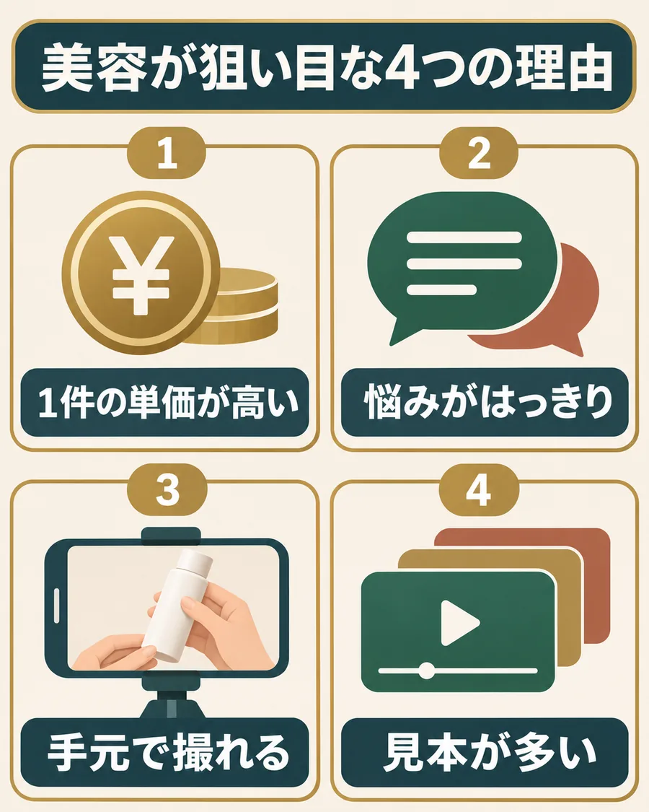
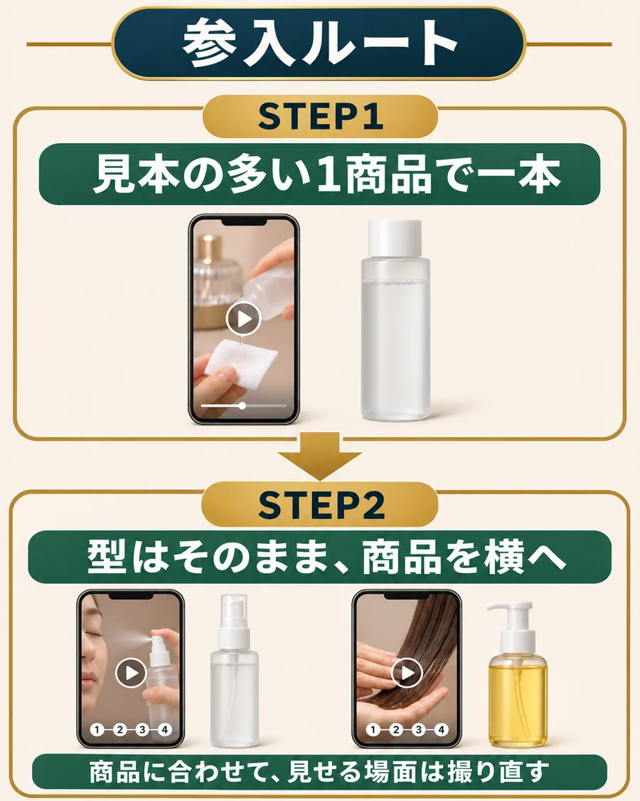

〇〇の答えは、美容。狙い目な理由は4つ。
TikTokで美容商品を紹介する。これがAIアフィの中心です。なんで美容なのか、理由は4つあります。

4つの理由を詳しく読む
- 1｜1件の紹介料が高くなりやすい
お試し価格で始めて、続けて買ってもらう商品が多い。販売元は2回目以降の購入で回収できるので、紹介料を高く出せるんです。
- 2｜悩みがはっきりしている
毛穴、乾燥、くすみ、髪のまとまり。悩みが言葉になっているので、動画の最初の一言で「自分のことだ」と手を止めてもらえます。
- 3｜手元で撮れる
商品が小さく、使う場面も洗面台やドレッサー。自分で撮れる素材が、家の中でそろいます。
- 4｜真似できる見本が多い
伸びている紹介動画が多いので、当たっている型を見つけて真似しやすい。初めての一本でも、構成を一から考えずに済みます。
単価が高く、売り方の見本もある。初めて入る市場として、この2つがそろっているのが美容なんです。
参入ルート：見本の多い1商品から、横へ広げる。

STEP1とSTEP2を詳しく読む
STEP1｜初めての一本
紹介動画がたくさん出てくる商品
商品名で検索して、伸びている紹介動画がある商品を一つ選ぶ。当たっている型を真似て、自分の商品で作ります。
見本を真似て、一本作るSTEP2｜一本作れたら
同じ悩みの別の商品・まだ誰もやっていない商品
伸びた型はそのままに、商品だけ変える。同じ型が並んでいない商品なら、そこで勝てることがあります。
型を残して、商品を変える僕なら、最初から紹介例が見つからない商品は選ばないです。「紹介が少ない」のは、狙い目じゃなくて、欲しい人がいないだけかもしれないので。
見本が少ない商品は、一本作れるようになってからで十分です。
美容の中で、外したほうがいい商品
選ぶ
見本があり、撮れて、案件がある
商品ページの売りを、自分の映像で見せられる。
あとで調べる
撮れるが、案件や仕様が分からない
紹介料の条件と商品ページを確かめてから決めます。
外す
効果を言い切らないと成り立たない
「1週間で消える」のような、商品ページで確かめられない効果を言わないと売れない商品は、最初の候補から外してください。
自分の候補は、この順番で調べる
- 気になる商品名で検索し、伸びている紹介動画があるかを見る。商品名で出てこなければ、「スキンケア」「ヘアケア」など分野名へ広げる。
- 紹介動画と公開レビューから、誰が何に悩んでいるかを一つ拾う。
- 商品ページで、販売元が推している売りと、使い方を確かめる。
- 紹介できる案件か、紹介料の条件と自分用リンクを確かめる。
自分の候補一つと、次に確かめる点を残す
紹介動画がたくさん出てくる美容商品を一つ選んだらOK。その商品で、当たっている型を真似て一本作ってみてください。